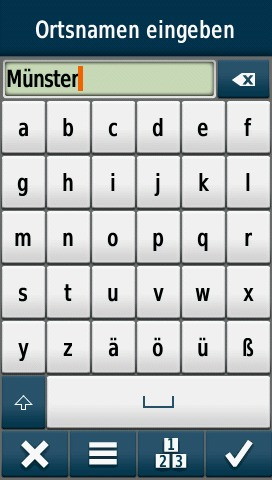
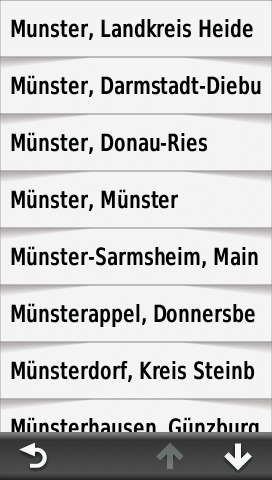
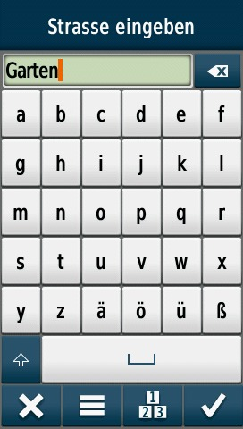
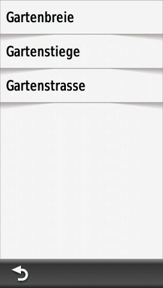
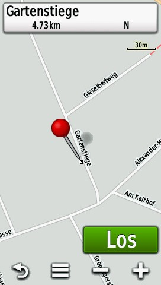

Das Konzept der Indexsuche soll an einigen konkreten Beispielen verdeutlicht werden. Alle Screenshots stammen von einem GPS-Gerät des Typs "Montana". Die Menüstruktur kann zwischen verschiedenen GPS-Gerätemodellen und -typen variieren.
Suche nach einer Adressse (Straße) - Beispiel "Gartenstiege in Münster (Kreisfreie Stadt in Nordrhein-Westfalen)":
 |
||
| "Adressen" auswählen | "Deutschland" auswählen | "Stadt/Ort eingeben" auswählen |
|  |  |  |
| "Münster" eingeben | "Münster, Münster" auswählen | "Garten" eingeben |
|  |  |
 |
| "Gartenstiege" auswählen | nicht unterstütztes Feature z.B. immer "1" eingeben |
Los |
Suche nach einem kategorisierten Point-Of-Interest (POI) - Beispiel "Geldautomat":
 |
||
| "Öffentl. Einrichtungen" auswählen | "Bank/Geldautomat" auswählen | Suchergebnisse |
Hinweis: Die Indexsuche befindet sich im Status "Erprobung" und kann in einigen Fällen inkorrekt oder unzureichend sein.